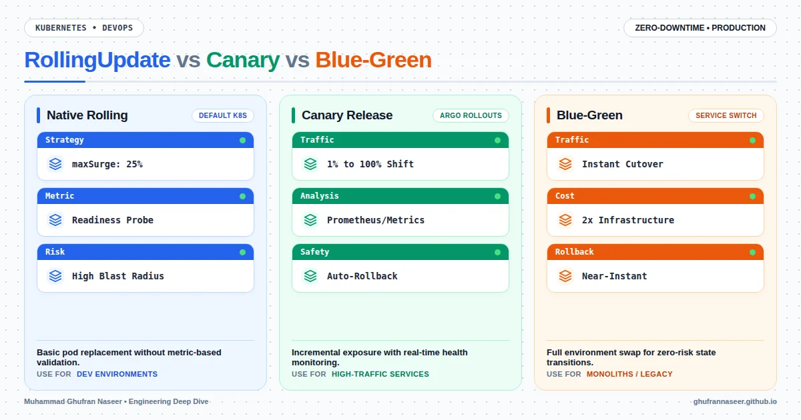

DevOps & Kubernetes
Zero-Downtime Resilience: Mastering Progressive Delivery in Kubernetes
Move beyond basic RollingUpdates to sophisticated Canary and Blue-Green strategies using GitOps and observability to ensure 99.99% availability during deployments.
Nov 11, 2026
5 min read
Read Article